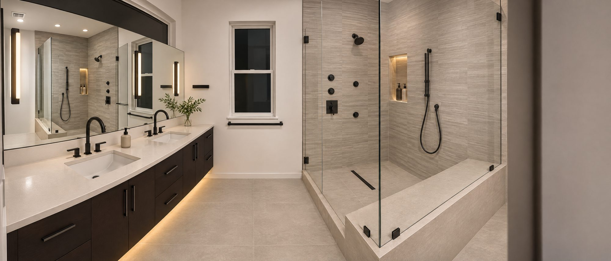
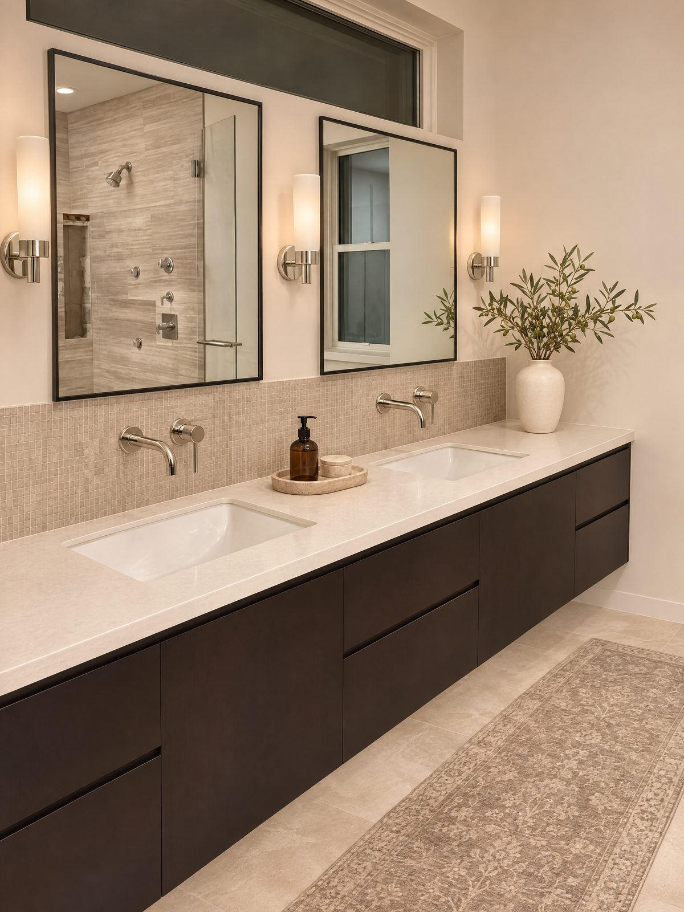
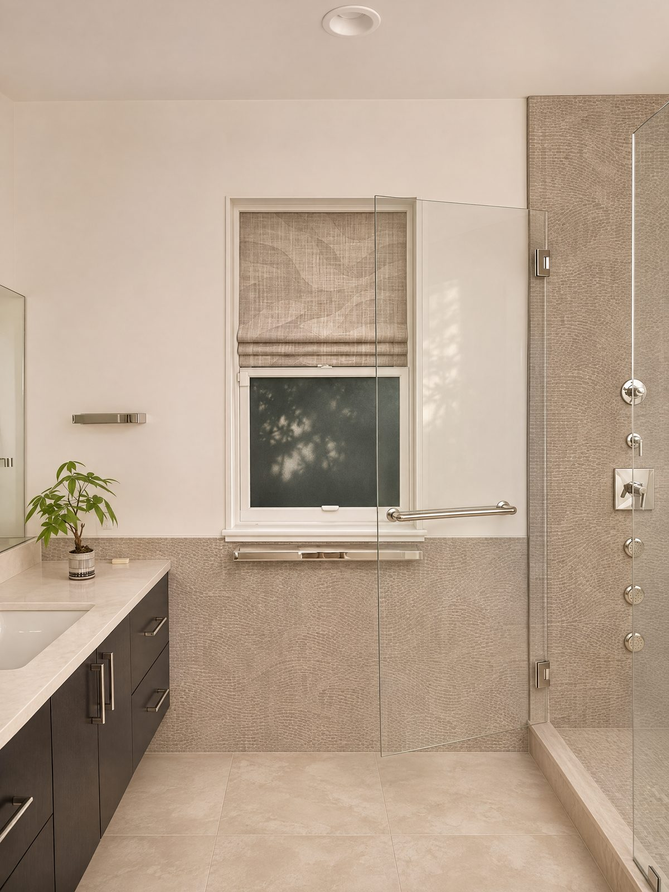
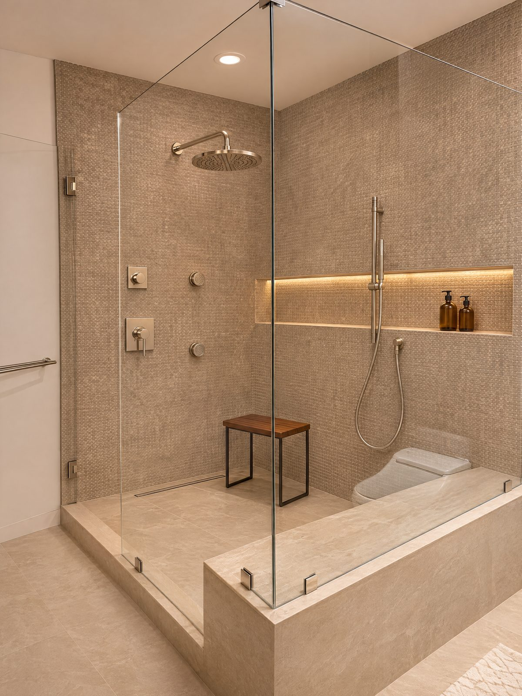
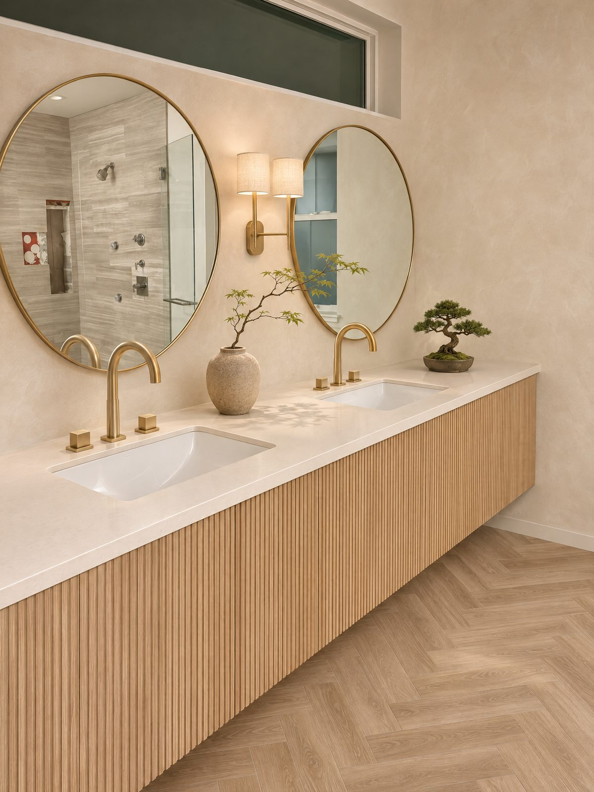
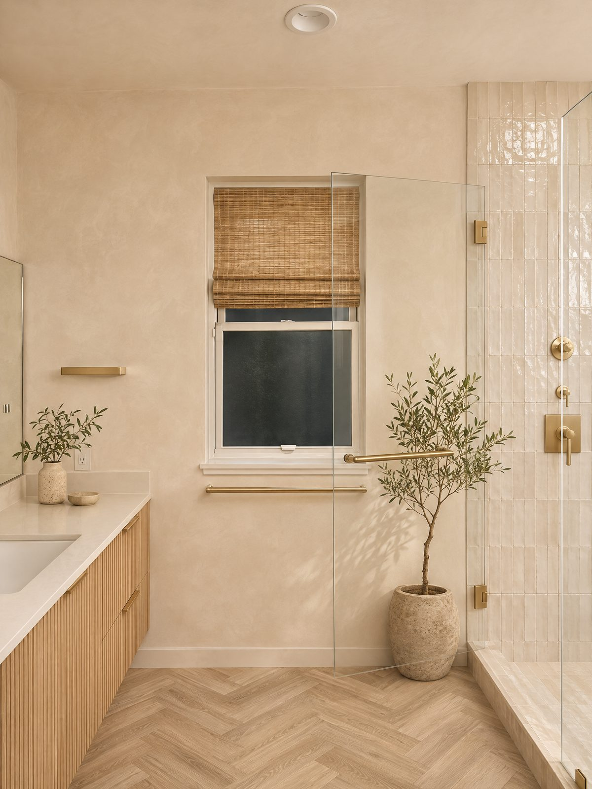
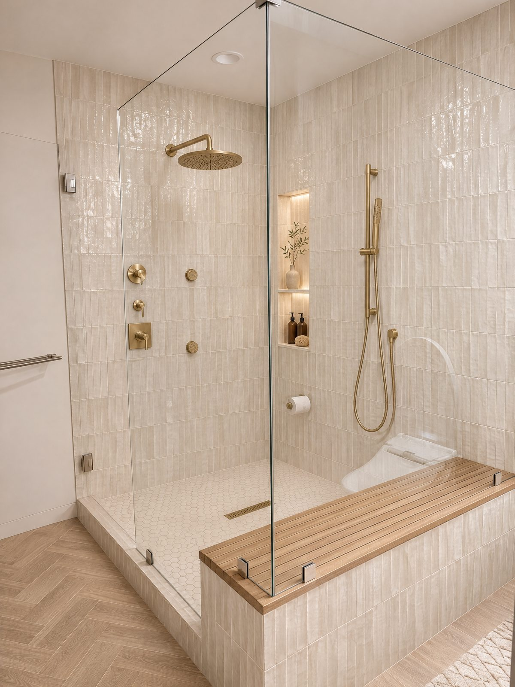
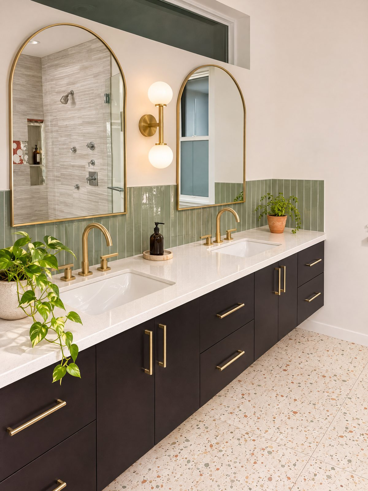
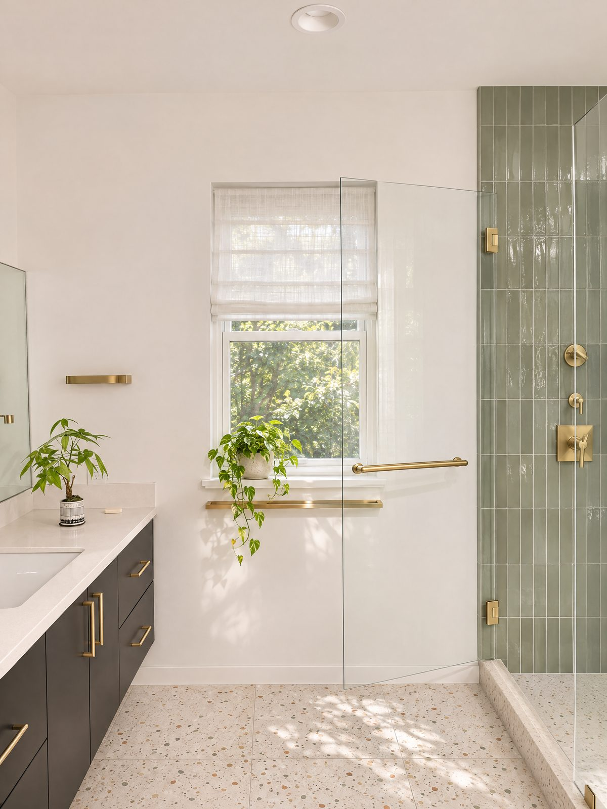
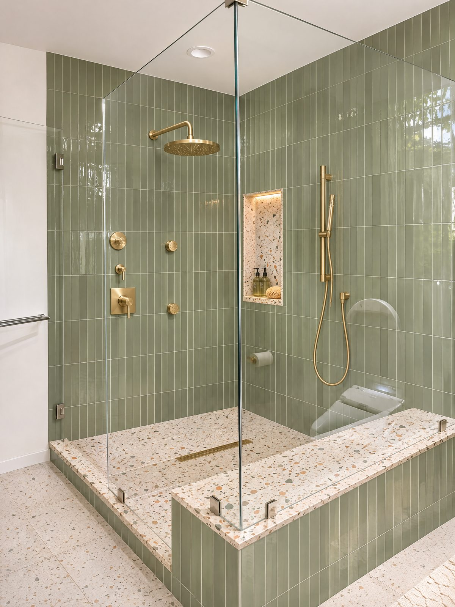

We keep the layout, the floating vanity, the glass shower and every wall right where they are. The old busy grey strip tile becomes large-format 24×48″ warm greige porcelain, with a few modern finishing touches to match.
A realistic walkthrough of the updated room, built from photos of the actual bathroom, so the layout, window, vanity and shower are all where they really are.
Drag the handle on any photo. Swipe sideways for the next view.
← swipe for more →

Same room, same footprint, same plumbing locations. Each concept is a complete look you can also walk through in 3D.
Keeps the stone shower walls and the big mirror. Calm 24×48″ warm greige porcelain floor, matte black fixtures, LED glow under the vanity, finished niche and linear drain.



Ivory limestone-look floor, a soft taupe textured mosaic on the shower and as a wainscot under the window, twin black-framed mirrors with polished-nickel sconces, wall-mounted faucets, a long lit niche, linen roman shade and a runner.



White-oak-look herringbone, the vanity refaced in fluted rift oak, round brass mirrors, warm-white zellige shower with an oak bench top, limewash walls and a bamboo shade.



Light terrazzo floor with terracotta and sage chips, glossy sage vertical-stack tile in the shower and backsplash, arched brass mirrors, globe sconces and brass pulls on the existing vanity.
The floor leads the change. Everything else is a small, low-disruption upgrade that makes the new floor look intentional.
Warm greige limestone look, matte finish, stacked grid parallel to the vanity, 1/16″ grout in a matching colour. About ⅔ fewer grout lines than the current 12×24 strips, so the room reads bigger and calmer. The warm tone also bridges the espresso vanity and the bedroom's oak.
The small mosaic strips become the same greige porcelain in 12×24, sloped to a slim black linear drain at the back wall. Fewer grout joints, easier to clean.
Bench top and curb get a matching greige slab with crisp mitred edges, tying the shower into the new floor.
The niche (currently unfinished, with exposed board) is tiled to match, with a warm LED strip.
A 2700K strip under the floating vanity washes light across the new tile. It's a great night light and makes the vanity look like it floats.
Faucets, shower trim, hand shower, towel bars and paper holder in matte black, matching the existing barn-door rail. (Chrome is also shown in the 3D tour.)
A slim metal transition where the porcelain meets the bedroom hardwood, instead of the tile just stopping.
Each one opens the 3D tour with that floor already installed.
| Main floor | Porcelain, 24×48″, matte/honed, rectified edges, warm greige limestone look (light warm grey-beige, low variation) |
|---|---|
| Layout | Straight stack bond, long side parallel to the vanity; start a full tile at the doorway |
| Grout | 1/16″, colour-matched (warm greige); epoxy or high-performance cementitious |
| Shower floor | Same tile cut to 12×24″, slope to a 36–48″ linear drain at the back wall (matte black grate) |
| Bench / curb | Matching porcelain slab caps, mitred edges |
| Transition | Low-profile matte black metal threshold to the bedroom hardwood |
| Approx. areas | Bathroom floor ≈ 67 sq ft, shower floor ≈ 19 sq ft. Order about 10–15% extra for cuts |
| Room (estimated) | ≈ 11′-0″ × 8′-6″, 9′ ceiling; 8′ double vanity; 36″ doorway |
Dimensions were estimated from the photos (using the 8′ vanity, 36″ door and standard fixture sizes) and should be tape-measured before ordering. To update the 3D model, edit the DIM block at the top of js/tour.js. The photorealistic images and video are AI renderings made from photos of the actual room. Use them as a design preview, not as construction documents.
Drag to look around, tap the floor to walk, flip Before/After, switch concepts and floors. Hold still and it sharpens into a photo-quality path-traced render. Works on any phone.